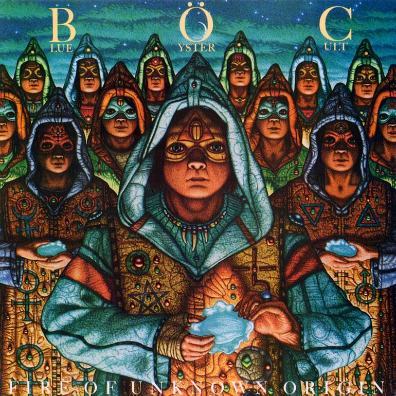

Blue Oyster Cult is just one of those classic rock bands who make music that one simply cannot deny the impact and strange-ness of.
I came to know BOC 3 or so years ago with the song I Love The Night. In a gloomy autumn night it was when I heard this song, many people resembling friends around me, not that any of them were not sincere, it was just that I felt alone, and I had the right to, since no meaningful friendship was established.

Fire of Unknown Origin Album Art
Tavern night with strangers vibe.
Anyways;I hold Blue Oyster Cult as dear to me as almost the band Camel.
I have never been any good at giving convincing concise recommendations on music. You just gotta listen to it.
Here are some of the songs I started out with :
In no particular order.
*I highly recommend Astronomy cover by Metallica
** I highly recommend Flaming Telepaths cover by Witchwood
Anyways here is the lyrics to one I was just listening to (Joan Crawford):
Junkies down in Brooklyn are going crazy
They’re laughing, just like hungry dogs in the street
Policemen are hidin' behind the skirts of little girls
Their eyes have turned the color of frozen meat
No, no, no, no, no, no, no, no, no, no, no, no
Joan Crawford has risen from the grave
Joan Crawford has risen from the grave
Catholic school girls have thrown away their mascara
They chain themselves to the axles of Big Mack trucks
The sky is filled with herds of shivering angels
The fat lady laughs, “Gentlemen, start your trucks”
No, no, no, no, no, no, no, no, no, no, no, no
Joan Crawford has risen from the grave
Joan Crawford has risen from the grave
no, no
(Christina) no, no, no, no, no
(Come to mother) no, no, no, no, no, no, no, no, no, no…
(Christina)
Joan Crawford has risen from the grave
Joan Crawford has risen from the grave
Joan Crawford has risen from the grave
Joan Crawford has risen from the grave
Joan Crawford has risen from the grave
Joan Crawford has risen from the grave
Joan Crawford has risen from the grave
Joan Crawford has risen